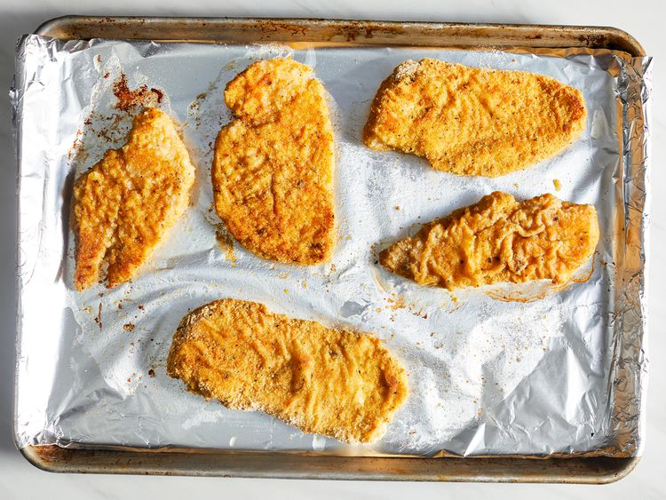

Chicken schnitzel is a breeze to make in the oven. Plus, this method uses less oil and has easier cleanup. The breaded chicken breasts are baked until golden and crispy on the outside, yet they're still tender and juicy on the inside. Serve schnitzels with lemon wedges and a German-style potato salad.
Preheat the oven to 425 degrees F (220 degrees C). Line a large baking sheet with aluminum foil and drizzle olive oil over foil. Place the baking sheet in the oven as it preheats.
Meanwhile, place chicken breasts between 2 sheets of plastic wrap on a solid, level surface. Firmly pound with the smooth side of a meat mallet to 1/4-inch thickness. Season both sides with salt and pepper.
Mix flour and paprika together in a shallow bowl. Whisk eggs, salt, and pepper together in a second shallow bowl. Mix bread crumbs and lemon zest together in a third shallow bowl.
Dredge one piece of chicken in flour; shake off excess. Dip into beaten egg. Lift up so excess egg drips back in the bowl. Press into bread crumbs to coat both sides. Place the breaded chicken, unstacked, onto a plate. Repeat with remaining chicken.
Remove the baking sheet from the oven. Arrange chicken in a single layer on the hot sheet. Drizzle more olive oil over each piece.
Bake in the preheated oven for 5 to 6 minutes. Flip chicken and continue baking until no longer pink in the center and the breading is lightly browned, 5 to 6 minutes more. An instant-read thermometer inserted into the center should read at least 165 degrees F (74 degrees C).
